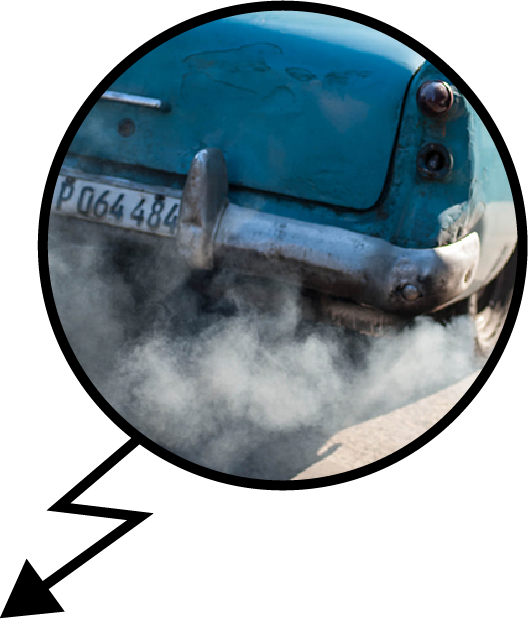
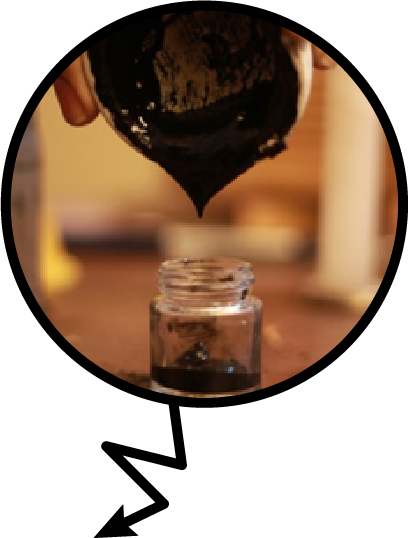

AIR-INK is created through a three-step process.
It takes just 45 minutes worth of vehicular emissions captured by Kaalink to produce 1 fluid ounce of ink––enough to fill one of the pens.
Step 1. While cheaper carbon black inks are manufactured through the deliberate burning of fossil fuels, we use our proprietary device––what we call KAALINK–– to capture soot that is already being emitted from vehicles. KAALINK is retrofitted to the exhaust pipe of vehicles/generators to capture the outgoing pollutants.
Step 2. The soot we collect undergoes various proprietary processes to remove heavy metals and carcinogens. The end product is a purified carbon rich pigment.
Step 3. The carbon is then used to make different types of inks and paints.
The end result
We have created several grades of AIR-INK with different applications: 2mm round tip and 15mm, 30mm and 50mm chisel tip markers, and screen printing ink.